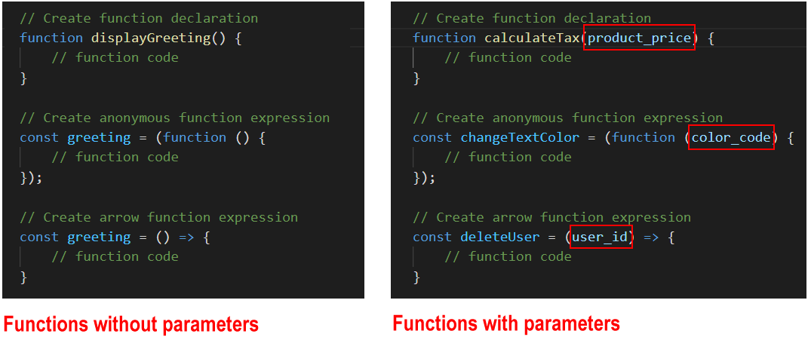
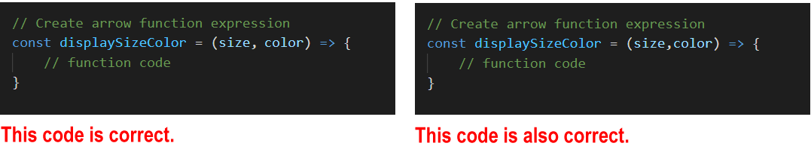

Learning Goals
At the end of this Tutorial, you will be able to:
- Create a function with one or more parameters.
- Pass one or more arguments to a function.
- Assign a value returned from a function to a variable in the calling program.
- Understand function and block scope in a JavaScript program.
- Understand how variables are created in different ways by the var, const and let keywords.
Functions: value and scope: JS Code Snippets
Passing values to functions
As you learnt in the Introduction to functions, a function is a ‘mini-program’ that performs a particular task within a larger, complete program.
Typically, you will want to provide some information to a function for the function to perform its task. You can think of this as ‘feeding’ the function.
Technically, ‘feeding’ a function is called passing a value to the function. You pass a value – or maybe multiple values – to a function when you invoke (call or fire) the function.
Functions and parameters
A variable that stores the expected input to a function is called a parameter.
- You specify the parameter(s) expected by a function when you create the function.
- You type the parameter(s) inside the parenthesis () of the function.
See the examples below.
A function may accept multiple parameters, separated by a , comma. The space between parameters is optional.
Functions and arguments
Parameters are what you specify when you create the function. Arguments are what you pass to the function when you invoke (call or fire) the function.

In the example above:
- A function is created with a parameter named age.
- When the function is called by the program, an argument of 21 is passed to the function.
You will often see the words ‘parameter’ and ‘argument’ written as follows:

Arrow function syntax
If an arrow function has only one parameter, you can omit the () parenthesis.
You will sometimes see the words parameter and argument used interchangeably.
Functions and return values
All JavaScript functions return a value to the code that invoked (called or fired) them – even if the return keyword is not included in the function.
A function that does not return anything (for example, a function that just outputs to the browser console) will return a value of undefined by default.
Consider the three functions below.
// Function declaration with parameters function sumA(a, b) { console.log(`Output A: ${a + b}`); } // Function call with arguments sumA(1, 2);
// Anonymous function expression with parameters const sumB = function (a, b) { console.log(`Output B: ${a + b}`); }; // Function call with arguments sumB(3, 4);
// Arrow function with parameters const sumC = (a, b) => console.log(`Output C: ${a + b}`); // Function call with arguments sumC(5, 6);
Note the following:
- Each function is designed to accept two input values, add them, and output the result to the web browser console.
- None of the three functions returns a value back to anywhere else in the program. (Or, more exactly, all three return a value of undefined.)
General rule: You only need to return something from a function if that returned value will be used elsewhere in the calling program.
Accessing return values from functions
Below you can see three similar functions to the ones above. The difference is that all three now return values back to the calling program.
// Function declaration with parameters // Includes return statement function sumA(a, b) { console.log(`Output A: ${a + b}`); return (a + b); } // Function call with arguments sumA(1, 2);
// Anonymous function expression with parameters // Includes return statement const sumB = function (a, b) { console.log(`Output B: ${a + b}`); return (a + b); }; // Function call with arguments sumB(3, 4);
// Arrow function with parameters // Includes return statement const sumC = (a, b) => { console.log(`Output C: ${a + b}`); return (a + b); }; // Function call with arguments sumC(5, 6);
But how can the calling program access these return values?
The answer is to create a variable in the calling program to store the value returned by each function. See the code below.
// Function declaration with parameters function sumA(a, b) { console.log(`Output A: ${a + b}`); return (a + b); } // Function call with arguments // Includes variable to access the function's returned value let resultA = sumA(1, 2); console.log(`Returned result A: ${resultA}`);
// Anonymous function expression with parameters const sumB = function (a, b) { console.log(`Output B: ${a + b}`); return (a + b); }; // Function call with arguments // Includes variable to access the function's returned value let resultB = sumB(3, 4); console.log(`Returned result B: ${resultB}`);
// Arrow function with parameters const sumC = (a, b) => { console.log(`Output C: ${a + b}`); return (a + b); }; // Function call with arguments // Includes variable to access the function's returned value let resultC = sumC(5, 6); console.log(`Returned resultC: ${resultC}`);
Of course, you don’t have to create the variable for storing the returned value at the same time you call the function.
You could create the variable earlier in the program.
See the final form of the three code samples below.
// Create variables to store values to be returned by functions
let resultA;
let resultB;
let resultC;
// Function declaration with parameters function sumA(a, b) { console.log(`Output A: ${a + b}`); return (a + b); } // Function call with arguments resultA = sumB(3, 4); console.log(`Returned result A: ${resultA}`);
// Anonymous function expression with parameters const sumB = function (a, b) { console.log(`Output B: ${a + b}`); return (a + b); }; // Function call with arguments resultB = sumB(3, 4); console.log(`Returned result B: ${resultB}`);
// Arrow function with parameters const sumC = (a, b) => { console.log(`Output C: ${a + b}`); return (a + b); }; // Function call with arguments resultC = sumC(5, 6); console.log(`Returned result C: ${resultC}`);
Arrow functions and returning values
Arrow functions follow different rules when returning values to the calling program. They can have two types of returns: explicit returns and implicit returns.
Explicit returns
When an arrow function contains the return keyword, that is called an explicit return. The return keyword must be inside a code block {}. See the example below.
// Single-line arrow function
// Code block contains return keyword
const squareNum = num => { return num * num; }
console.log(`Five squared is: ${squareNum(5)}`);
Implicit returns
An arrow function can return a value to the calling program without using the return keyword. This is called an implicit return.
You can only use an implicit return if the function is returning just one value and does not contain a code block {}. See the example below.
// Single-line arrow function. No return keyword.
const doubleNum1 = num => num * 2;
Default function parameters
What happens if the number of arguments you pass to a function is different to the number of parameters the function expects to receive?
In JavaScript, a parameter of a function has a default value of undefined.
This means that if you fail to pass the expected argument when calling the function, the function gives the missing parameter this default value. See the example below.
function showGreeting(message) {
console.log(message);
}
showGreeting(); // Outputs 'undefined'
You can use the assignment operator = to set a default value for a function parameter as follows.
function showGreeting(message='Hello, world!') {
console.log(message);
}
showGreeting(); // Outputs 'Hello, world!'
showGreeting('Hi, there'); // Outputs 'hi, there!'
If too many arguments are provided when a function is called, the function will simply ignore the excess arguments.
Consider the following function that finds the average of three numbers.
averageThreeNums = (x,y,z) => {
let result = (x + y + z)/3;
console.log(`Average of three numbers is: ${result}`);
}
averageThreeNums(1,2,3,4,5,6); // ignores 4, 5, 6
averageThreeNums(1,2,3,4,5); // ignores 4, 5
averageThreeNums(1,2,3,4); // ignores 4
averageThreeNums(1,2,3);
// result is always '2'
Functions and scope
The word scope means the availability of a variable or other item in a particular area of a program.
- Global scope: There is only one global scope in a JavaScript program. This is the area outside any functions in the program.
 Variables defined in the global scope can be accessed and altered from any function or block scope anywhere in the program.
Variables defined in the global scope can be accessed and altered from any function or block scope anywhere in the program. - Local scope: Variables declared inside a function are local to that function.
 Every function has its own scope. The same variable name can be used in different functions because local variables are not accessible across functions.
Every function has its own scope. The same variable name can be used in different functions because local variables are not accessible across functions.
Local scope can be divided into function scope and block scope.
Function scope
Whenever you declare a variable in a function, the variable is visible only within the function. You cannot access it outside the function.
var is the keyword to define a variable for function-scope accessibility.
Block scope
Block scope is the area within if and switch conditions, and within for and while loops.
As a general rule, whenever you see parenthesis {}, it is a code block.
The const and let keywords enable you to declare variables in the block scope. These variables are accessible only within their code blocks.